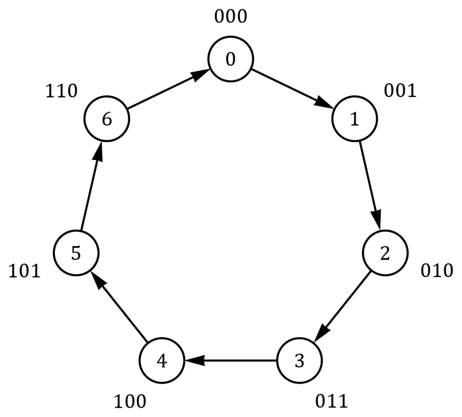
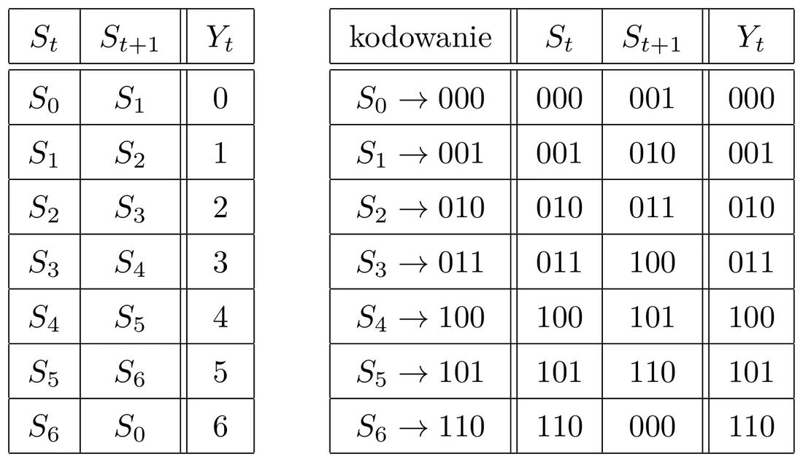
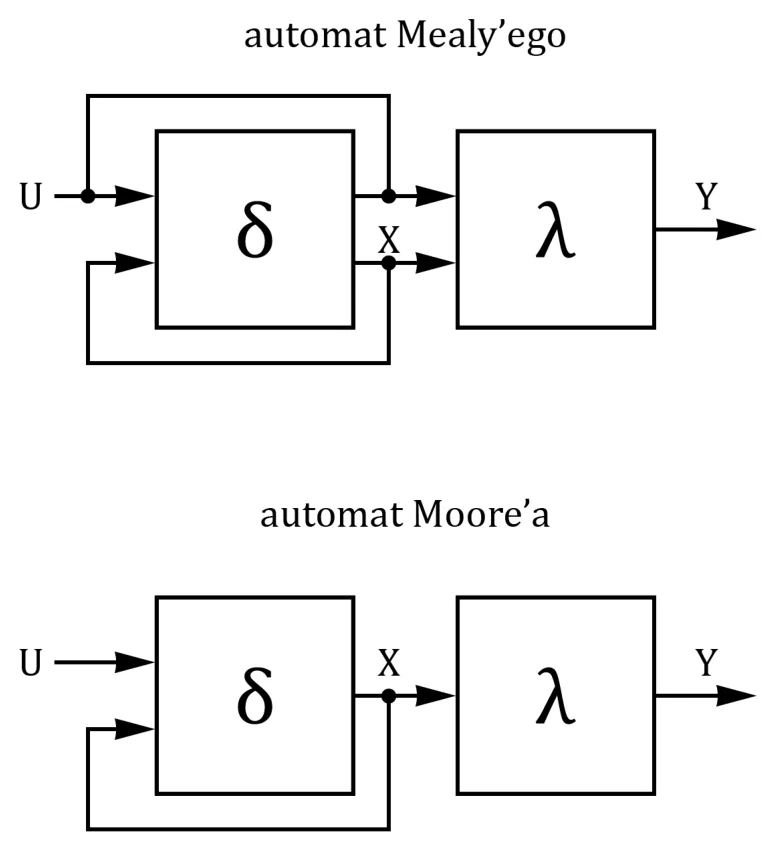
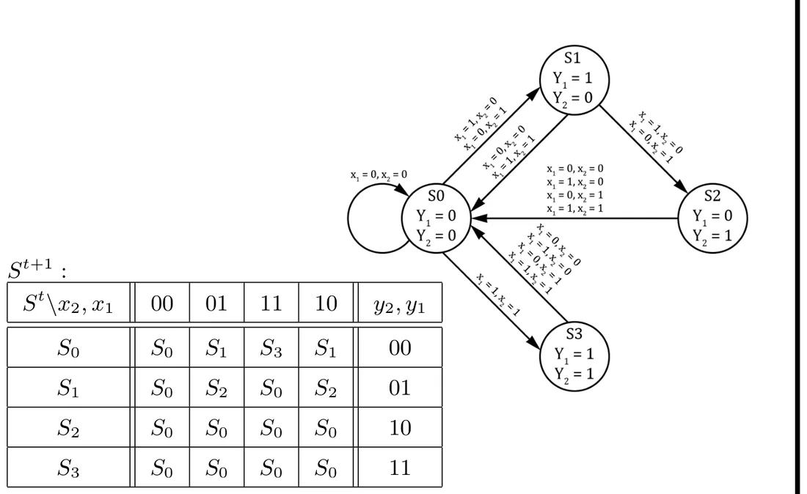
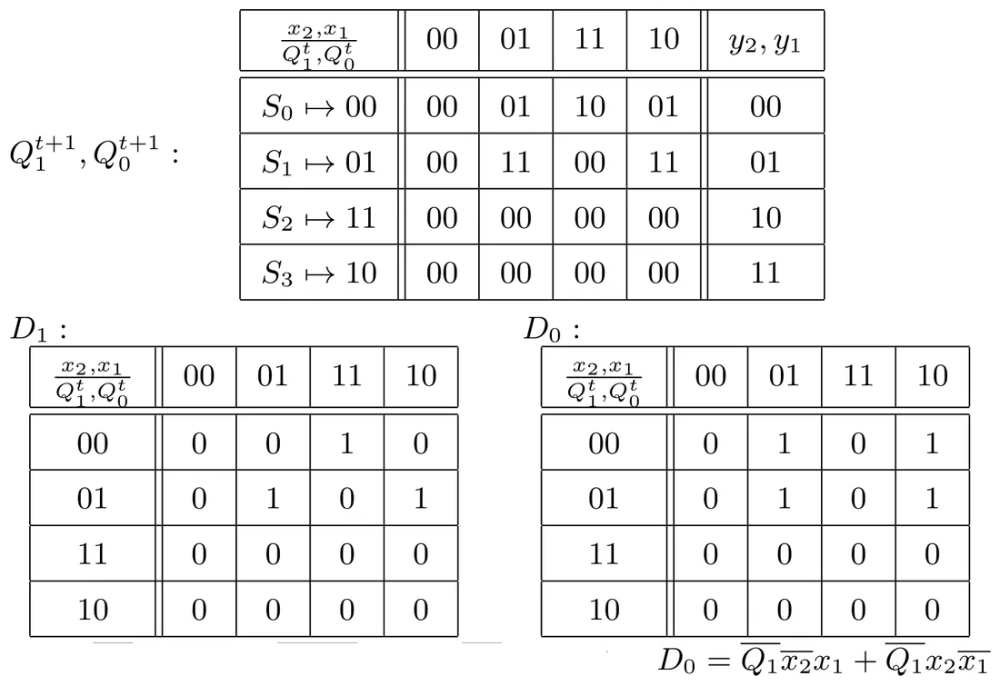
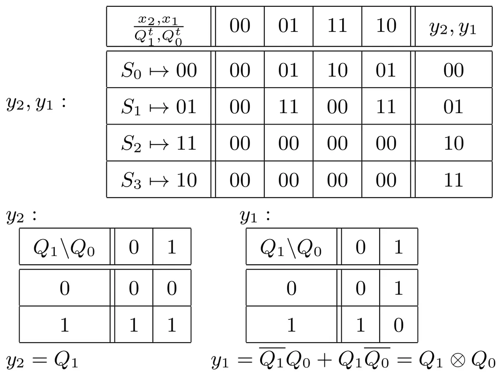
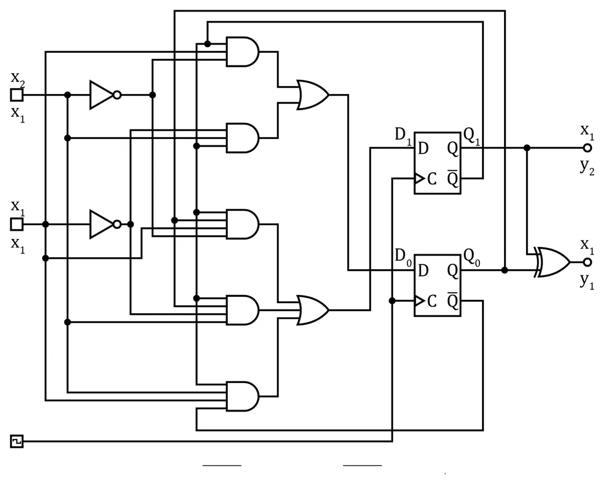
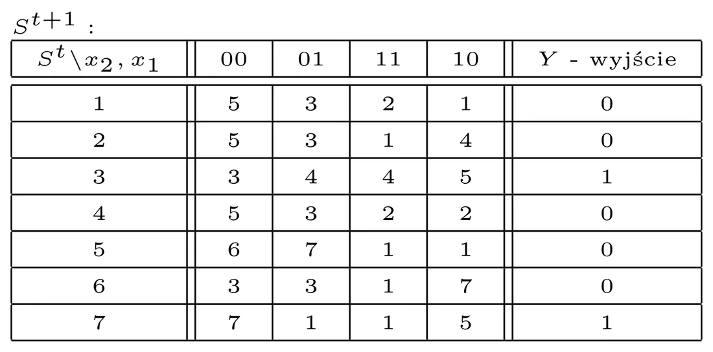
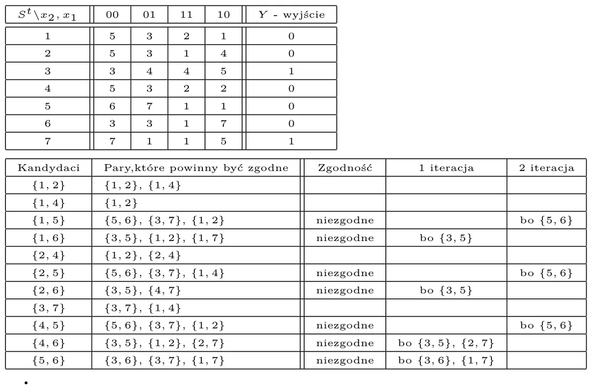

Internal state and the transition graph
A sequential circuit has an internal state: its future depends on the state it is in now and on what it receives at the input (see lecture 9).
The behaviour of such a circuit is best drawn as a directed graph:
- a circle (node) = a state; in a Moore machine the output values are written inside it as well,
- an arrow = a transition to another state; next to the arrow is the input value that causes it.


States are implemented with flip-flops, and the transitions between them with gates. State changes are synchronised by the clock; they usually happen at its positive (rising) edge.
In plain words
A state graph is a game board. The pawn stands on one square (the state). At every tick of the clock you look at the input and move the pawn along the matching arrow. Designing the circuit means: draw the board, number the squares and build a little machine that moves the pawn by itself.
State coding
Flip-flops remember bits, not names like "S0, S1…", so each state must be given a binary code. To code k states you need enough flip-flops that 2n ≥ k (4 states → 2 flip-flops, 5–8 states → 3).


Moore and Mealy


- δ — the excitation function: computes the next state (this is the "memory"),
- λ — the output function: a combinational circuit computing the outputs.
In design, Moore machines (output depends only on the state) are used more often — and they are the only ones we deal with below.
The four design stages
The recipe from the lecture
- Graph. From the task description draw the graph: states with their output values and arrows labelled with input values. Each state must have an arrow for every combination of inputs — otherwise the circuit would be non-deterministic.
- State coding. Assign binary codes to the states using as few variables (flip-flops) as possible.
- Excitation functions. "Split" the coded transition table into single flip-flops: for each one determine (with a Karnaugh map) the function to feed to its input.
- Output functions. For each output draw a Karnaugh map that turns the state (flip-flop outputs) into the output value.
Why D flip-flops are the easiest
For a D flip-flop Qt+1 = D, so the excitation function is simply "the next state": whatever should be in the flip-flop after the clock edge, you feed straight to its D input. That is why the "next state" columns of the coded table go directly into the Karnaugh maps for D1, D0.
The lecture example, step by step
Task. The circuit has two inputs (x2, x1) and two outputs (y2, y1):
- when the inputs are two ones — it alternately turns both outputs on and off (at the positive clock edge),
- when they are two zeros — both outputs are off,
- for the other combinations (01, 10) — the outputs behave like a mod-3 counter.
Step 1: states and the graph
All 4 combinations can appear on two outputs, and in a Moore machine each output value has its own state — so at least 4 states are needed:
| State | y2 | y1 |
|---|---|---|
| S0 | 0 | 0 |
| S1 | 0 | 1 |
| S2 | 1 | 0 |
| S3 | 1 | 1 |


The transition table (the cells hold the next state):
| State \ x2x1 | 00 | 01 | 11 | 10 | y2y1 |
|---|---|---|---|---|---|
| S0 | S0 | S1 | S3 | S1 | 00 |
| S1 | S0 | S2 | S0 | S2 | 01 |
| S2 | S0 | S0 | S0 | S0 | 10 |
| S3 | S0 | S0 | S0 | S0 | 11 |
How to read it: column 00 always leads to S0 (point 2). Column 11: from S0 to S3 (both on), from S3 back to S0 (both off) — alternating (point 1). Columns 01 and 10: S0 → S1 → S2 → S0, i.e. counting 0, 1, 2, 0… (point 3).
Step 2: state coding
The choice: S0 → 00, S1 → 01, S2 → 11, S3 → 10 (the bits are Q1Q0 — the outputs of two flip-flops). After substituting the codes:
| Q1Q0 \ x2x1 | 00 | 01 | 11 | 10 | y2y1 |
|---|---|---|---|---|---|
| 00 (S0) | 00 | 01 | 10 | 01 | 00 |
| 01 (S1) | 00 | 11 | 00 | 11 | 01 |
| 11 (S2) | 00 | 00 | 00 | 00 | 10 |
| 10 (S3) | 00 | 00 | 00 | 00 | 11 |
The rows are in Gray-code order (00, 01, 11, 10) — so the table is already a Karnaugh map.
Step 3: excitation functions (D flip-flops)
From every cell take the left bit into the D1 map and the right bit into the D0 map:


Step 4: output functions
The outputs depend only on the state, so the maps have only the variables Q1, Q0:


The finished circuit


Two D flip-flops (common clock), in front of them the gates computing D1 and D0, behind them the gates computing the outputs.
How to code the states
The choice of codes decides how complicated the excitation functions turn out. There is no method that always gives the minimum, but three rules help (in order of priority) — each says that certain states should get codes differing in one bit:
- states that have the same next state,
- the next states of the same current state,
- states that have the same output values.
In plain words
States that are "neighbours in behaviour" should also be neighbours on the Karnaugh map — then the ones form large groups and the formulas come out short.
Minimising the number of states
Sometimes a graph drawn "from the task text" has more states than needed. Two states are equivalent (can be replaced by one) if:
- they have the same output values, and
- for every combination of inputs their next states are the same or equivalent.


The procedure from the lecture:
- Split the states by output. Here: {3, 7} have Y = 1 and {1, 2, 4, 5, 6} have Y = 0. Only pairs from the same group can be equivalent.
- For each candidate pair list which pairs of next states would have to be compatible.
- Cross out the pairs that require compatibility of states with different outputs. Repeat until nothing changes.


Result: A = {1, 2, 4}, B = {3, 7}, C = {5}, D = {6} — seven states shrink to four (2 flip-flops instead of 3).
| State \ x2x1 | 00 | 01 | 11 | 10 | Y |
|---|---|---|---|---|---|
| A | C | B | A | A | 0 |
| B | B | A | A | C | 1 |
| C | D | B | A | A | 0 |
| D | B | B | A | B | 0 |
Incompletely specified circuits
Sometimes part of the table "does not matter":
- some combination of inputs never occurs,
- after coding there are spare codes — e.g. a mod-3 counter has 3 states while 2 flip-flops give 4 codes; the fourth never occurs.
Such cells may hold any value — whichever is convenient (they are usually marked "–" or "×"), and when grouping on the Karnaugh map you treat them as 0 or 1, whichever gives larger groups.
Notes on Mealy machines
- The output is not tied to the state alone — it also depends on the input.
- They often allow fewer states, at the cost of a more complex output function.
- On the graph the output value is written next to the arrows, not inside the circles.
Lab tasks (from the slide)
Design traffic lights: in normal mode (input = 1) the sequence red → red and yellow → green → yellow; in emergency mode (input = 0) the yellow light — steady (variant 1) or blinking (variant 2).
The full solution of variant 1 and practice tasks: Lab 11.